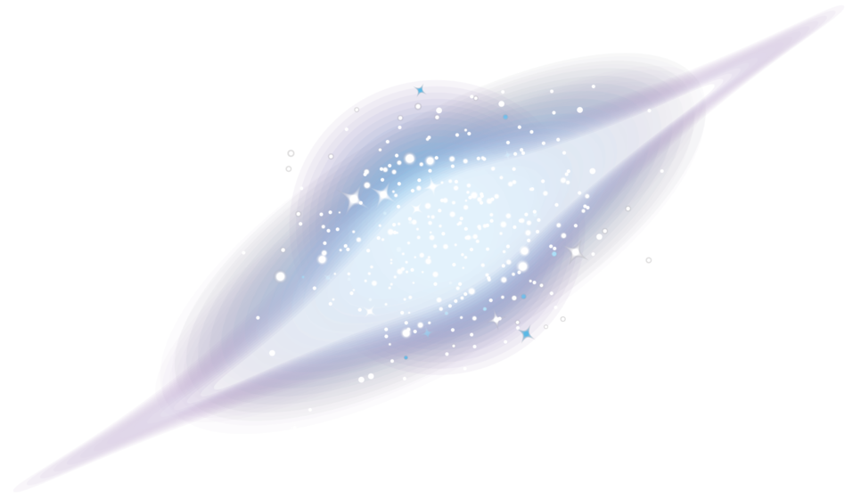

Stellar
Horizons
-
Home
Planetas
Galáxias
Costelações
-
Home
Planetas
Galáxias
Costelações

Voltar
Galáxia Lenticular
Disco achatado
Galáxia Lenticular - As galáxias lenticulares têm uma forma de lente ou disco e não possuem estrutura espiral ou barra central. Elas são compostas principalmente por estrelas velhas e poucas estrelas jovens, e podem ter um bojo central. Essas galáxias são menos comuns do que as galáxias elípticas ou espirais e são encontradas em regiões menos densas do universo.